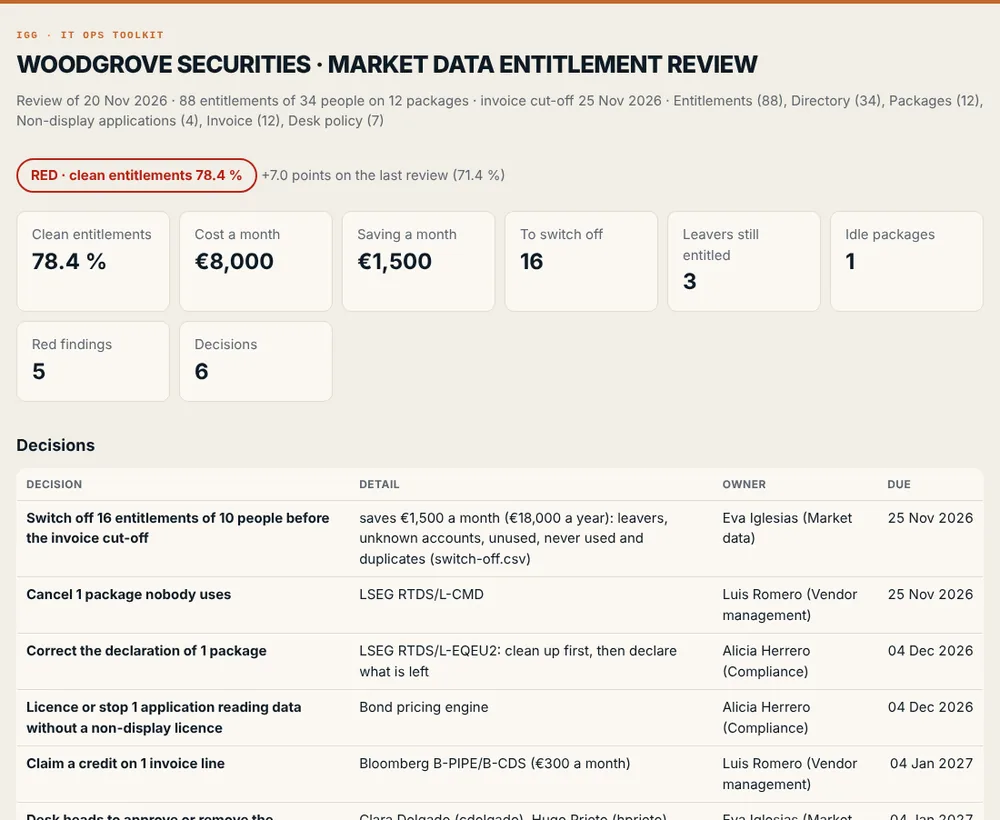

A rates trader left at the end of October and was still entitled to four market data packages three weeks later. A test account that nobody remembered had swap data on both platforms, and a commodity futures package paid for two people had not been opened since July. That is what the market data entitlement review published with this post finds. It is an open-source project that runs on sample data from a fictional broker with its trading floor in Madrid.
Market data is charged per person and per package every month, on LSEG and on Bloomberg. Each platform has its own system that says who can see what: DACS for LSEG RTDS and EMRS for Bloomberg B-PIPE. The review joins both exports with the directory, the contract fees, the vendor invoice and the packages each desk may have, five days before the cut-off for the December invoice.
Who should not be there at all
Three accounts are red: the trader who left, a salesperson whose account is disabled and still has three packages, and the test account, which is not in the directory. Two entitlements fall outside their desk's policy, such as credit index data for an equities salesperson, and four have no recorded approval.
What nobody uses
Five entitlements have not been used for more than 90 days, and one given in July has never been opened. A government bond trader has the same Eurozone bonds data on both platforms and only uses the LSEG one. The review puts all of them, with the leavers, on a switch-off list with what each one costs: 16 entitlements and €1,500 a month, €18,000 a year, before the cut-off.
The invoice and the applications
The invoice charges for eleven credit index users when nine are entitled, a credit to claim. The other way round is the risky one: six people can see European equities depth and four are declared, the difference an audit would find. A bond pricing engine reads Bloomberg data without a screen and there is no non-display licence for it; another application has no business owner, and a legacy risk feed stopped reading in August.
The demo scores 78.4% clean entitlements, seven points up on the last review, with five red and 16 amber findings and six decisions: switch off the 16 entitlements, cancel the idle package, correct one declaration, licence or stop the pricing engine, claim the credit and have the desk heads approve or remove what is outside policy.
How to use it with real data
The repository includes a PowerShell script that only reads Active Directory for the people who hold an entitlement; the DACS and EMRS exports, the packages with their fees, the invoice and the desk policies go in CSV files. The periods, the cut-off date and the fees are the organisation's own policy and contracts in a settings file. It runs on Python with no external dependencies and produces a web report, a one-page pack for the desk heads and CSV files with every entitlement, the switch-off list, packages, invoice lines and actions. The demo data is fictional: names, packages, fees and dates, and the fees are not any vendor's prices.
Where it comes from
The tool comes from supporting trading desks and their market data platforms, LSEG RTDS / TREP and Bloomberg B-PIPE, and from software asset management, licence cost control, vendor management and access reviews under ISO 27001.
Want to bring it to your environment or adapt it to your case? Get in touch and we can look at it together.
Tech Career Lab · newsletter
Found this useful? Every two weeks I send one practical idea for IT professionals: LinkedIn, projects, networking and hiring processes.
Sign up and get the 33 ideas →